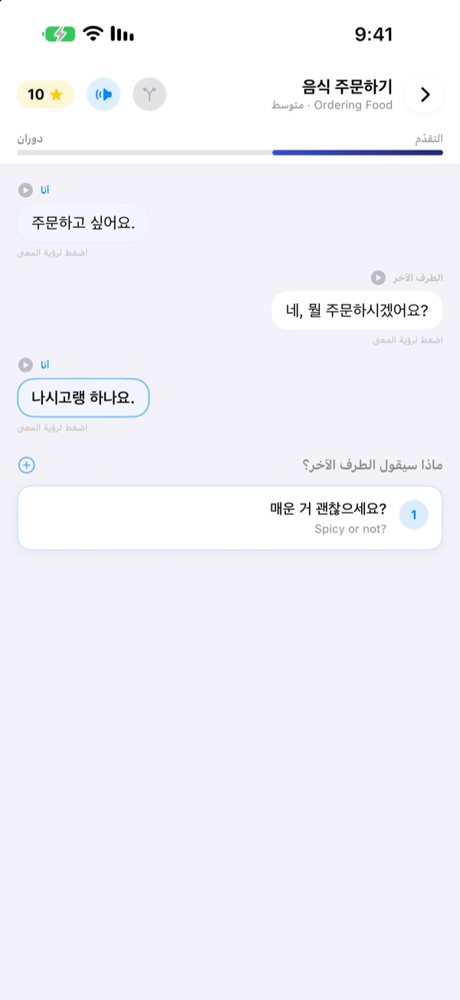
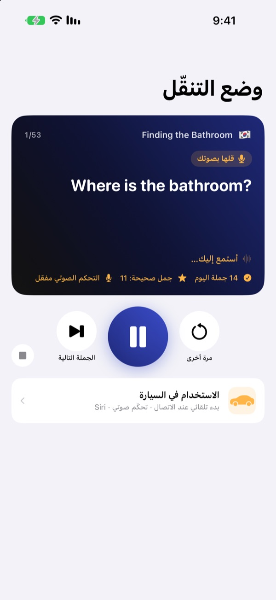
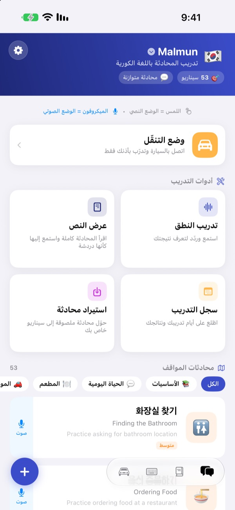
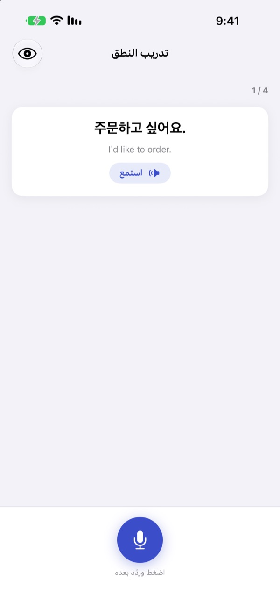

لا تتجمّد بعد اليوم.
ابدأ الكلام أنت.
Malmun مدرّب محادثة يأخذ فيه كل رد تختاره الحوار في اتجاه مختلف. تعلّم الكورية أو اليابانية أو الصينية أو الإسبانية أو الإندونيسية، وتدرّب في السيارة بأذنك وصوتك فقط.
المحادثات المتفرّعة وتدريب النطق والمفردات مجانية.

أنت من يقود المحادثة
هذا حوار «صباح الخير» الإندونيسي من التطبيق. كل جملة تختارها تأخذ الدردشة في اتجاه آخر.
حفظت الجملة، لكن الرد لم يأتِ كما توقعت؟
في الكتب تسير الحوارات دائمًا وفق النص. أما في الحياة فيقول الطرف الآخر ما لم تتوقعه. يتيح لك Malmun أن تجوب كل تفرّعات المحادثة مسبقًا، فتكون جملتك التالية جاهزة أيًّا كان ما يُقال. حتى طريق العودة إلى البيت يصبح وقتًا للتدريب.
تدرّب بأذنك وأنت تقود
يُشغَّل وضع التنقّل من سمّاعات السيارة عبر البلوتوث أو CarPlay. تسمع المعنى أولًا، ثم تمنحك نغمة وقتًا لتقولها، ثم تسمع الإجابة مرة ببطء ومرة بالسرعة العادية.
تقدّم أو أعد الاستماع بأزرار المقود، أو قل في دورك «التالي» أو «مرة أخرى» أو «أبطأ». ويتوقف قليلًا حين تتكلّم الملاحة.

كل مواقف السفر والحياة اليومية
في كل لغة 53 محادثة للمواقف: الأساسيات، والدردشة اليومية، والمطعم، والمواصلات، والمطار، والفندق، والتسوّق، والسياحة، والطوارئ.
ولمتعلّمي الإندونيسية المزيد: 5 سيناريوهات دردشة مكتوبة بعناية، و3 مسارات يومية في كل منها 6 مشاهد مع جدول أسبوعي، و100 كلمة لرحلات العمل.

اعرف إن كنت نطقتها صحيحًا
يمنحك تدريب النطق نتيجة، ويلوّن الكلمات التي أصبت فيها والتي فاتتك.
وفي عرض النص تنفتح المحادثة كاملة كأنها دردشة. استمع إليها من أولها إلى آخرها، أو أخفِ المعاني واختبر نفسك.

ابدأ في ثلاث خطوات
- 1
اختر لغة
اضغط العلم أعلى الشاشة الرئيسية. تُحفظ عباراتك وكلماتك منفصلة لكل لغة.
- 2
افتح حوارًا
في الوضع النصي اضغط الردود، أو اضغط الميكروفون وتكلّم: يجد الوضع الصوتي أقرب رد.
- 3
وضع التنقّل في السيارة
اربط iPhone بالسيارة واضغط تشغيل. لا حاجة إلى النظر إلى الشاشة.
التحكم في وضع التنقّل
- المقود: المقطع التالي
- الجملة التالية
- المقود: المقطع السابق
- الجملة نفسها مرة أخرى
- زر التشغيل
- إيقاف مؤقت ومتابعة
- «التالي» · «تخطي»
- الجملة التالية
- «مرة أخرى» · «كرر»
- استمع مجددًا
- «أبطأ» · «أسرع»
- تغيير سرعة القراءة
- «المشهد التالي»
- الانتقال إلى الحوار التالي
- «توقف» · «خلاص»
- إنهاء التدريب
- Siri: «ابدأ تدريب التنقّل في Malmun»
- ابدأ دون لمس الهاتف
حين تكون الواجهة بالعربية تقول الأوامر الصوتية بالعربية. لا يُستمع إلى الأوامر إلا في دورك بعد النغمة. وتظهر الجملة الجارية في معلومات التشغيل في السيارة. لا توجد شاشة تطبيق منفصلة في CarPlay.
ابدأ مجانًا. ولمزيد من الميزات Malmun Plus أو Pro.
مجاني
- كل اللغات، ومحادثات المواقف: الأساسيات والدردشة اليومية
- الدردشات المتفرّعة والمسارات اليومية والجدول الأسبوعي (الإندونيسية)
- تدريب المحادثة المتفرّعة كتابةً أو صوتًا، والنطق، وعرض النص، وسجل التدريب
- عباراتي، وبطاقات الكلمات، ولوحة مفاتيح العبارات
- وضع التنقّل حتى 3 مشاهد يوميًا، بما في ذلك البدء عبر Siri
- حتى 3 سيناريوهات تنشئها أو تستوردها، وعرض ما يشاركه أصدقاؤك
Malmun Plus · Pro
- Plus: محادثات المواقف الـ53 كلها (المطعم، المواصلات، المطار، الفندق، التسوّق، السياحة، الطوارئ) في كل اللغات
- Plus: سيناريوهاتك واستيراد الحوارات بلا حدود
- Pro: كل ما في Plus مع وضع التنقّل بلا حدود
- Pro: إنشاء السيناريوهات بالذكاء الاصطناعي (بمفتاح Anthropic API الخاص بك) ومشاركتها مع أصدقائك عبر iCloud
يتوفر كل منهما باشتراك أسبوعي أو شهري أو سنوي، أو بشراء واحد مدى الحياة. للمشتركين الجدد في الخطة السنوية سعر مخفّض للسنة الأولى.
تجد الأسعار في التطبيق وفي App Store. يتجدد الاشتراك تلقائيًا ما لم يُلغَ قبل نهاية المدة بـ24 ساعة على الأقل. إذا اشتريت Malmun حين كان مدفوعًا أو لديك Malmun Pro، فتبقى لك كل الميزات دون دفع إضافي.
الأسئلة الشائعة
ما اللغات التي يمكنني تعلّمها؟
الكورية واليابانية والصينية والإسبانية والإندونيسية. الأزرار والقوائم بالعربية، أما معاني الجمل فبالإنجليزية، ولذلك لا تظهر الإنجليزية نفسها في القائمة.
كيف أستخدمه في السيارة؟
اربط iPhone بالسيارة عبر البلوتوث أو CarPlay، وافتح وضع التنقّل، واضغط تشغيل. يصدر الصوت من سمّاعات السيارة، وتظهر الجملة الجارية في «قيد التشغيل». ويمكنك أن تقول لـ Siri: «ابدأ تدريب التنقّل في Malmun»، أو تنشئ مرة واحدة أتمتة في تطبيق الاختصارات ليبدأ عند اتصال CarPlay أو بلوتوث السيارة.
هل يستمع الميكروفون طوال الوقت؟
لا. لا يستمع إلا في دورك بعد النغمة، وعبر ميكروفون iPhone فقط.
نطقي لا يُتعرَّف عليه.
يعمل التعرّف على الكلام باللغة التي تتعلّمها. جرّب في مكان أهدأ، وتأكد من تنزيل التعرّف على الكلام لتلك اللغة على جهازك.
كيف أضيف لوحة المفاتيح؟
اذهب إلى الإعدادات ◂ عام ◂ لوحة المفاتيح ◂ لوحات المفاتيح ◂ إضافة لوحة مفاتيح جديدة، واختر لوحة مفاتيح Malmun. وأثناء الكتابة اضغط زر الكرة الأرضية للتبديل إليها. لا حاجة إلى «السماح بالوصول الكامل». ولإظهار عبارات أقل اضغط رمز لوحة المفاتيح في الشاشة الرئيسية ◂ إدارة لوحة المفاتيح.
لا أرى السيناريو الذي شاركه صديقي.
تعمل المشاركة عبر iCloud، لذا يجب أن يكون كلاكما مسجّلًا الدخول إلى iCloud. وإن لم يظهر بعد، أغلق التطبيق تمامًا وافتحه من جديد. مشاركة السيناريوهات ميزة في Malmun Pro، أما عرض ما يُرسل إليك فمجاني.
ماذا أحتاج لإنشاء سيناريو بالذكاء الاصطناعي؟
أدخل مفتاح Anthropic API الخاص بك في التطبيق واكتب موضوعًا، فيُنشأ حوار جديد. إنشاء السيناريوهات بالذكاء الاصطناعي ضمن Malmun Pro، ولا تحتاج أي ميزة أخرى إلى مفتاح.
كيف ألغي الاشتراك أو أطلب استرداد المبلغ؟
تدير Apple المدفوعات. للإلغاء: الإعدادات في iPhone ◂ حساب Apple ◂ الاشتراكات ◂ Malmun. ولاسترداد المبلغ تواصل مع Apple عبر reportaproblem.apple.com.
اشتريت iPhone جديدًا واختفى Plus أو Pro.
سجّل الدخول بحساب Apple نفسه، ثم اضغط في Malmun الإعدادات (الترس أعلى الشاشة الرئيسية) ◂ استعادة المشتريات.
أين يُحفظ تقدّمي؟
لا حاجة إلى حساب. تبقى بياناتك على جهازك وفي iCloud الخاص بك. لا إعلانات ولا تتبّع، ولا يُرسل سوى إحصاءات استخدام مجهولة وتقارير الأعطال. ويمكنك أيضًا كتابة الأخطاء والطلبات في GitHub Issues (github.com/M1zz/IndonesianSmallTalk/issues).
لديك سؤال أو اقتراح؟ راسلنا على leeo@kakao.com، أو استخدم في التطبيق الإعدادات ◂ إرسال ملاحظات، أو تواصل عبر إنستغرام @lee25_ios.